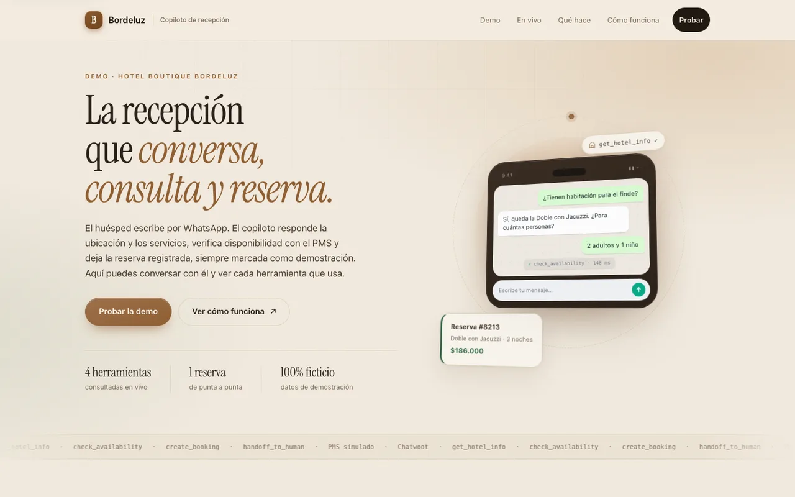
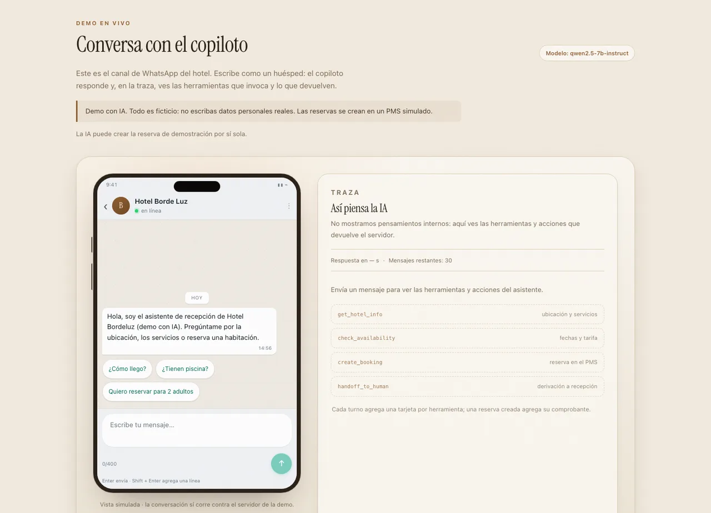
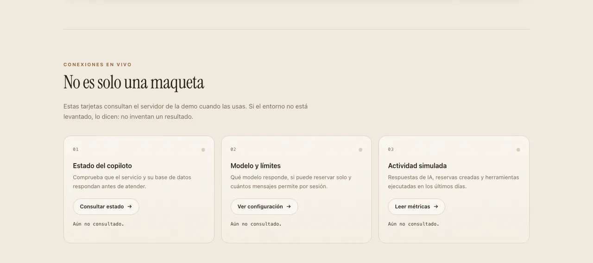
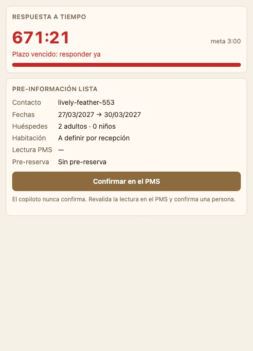
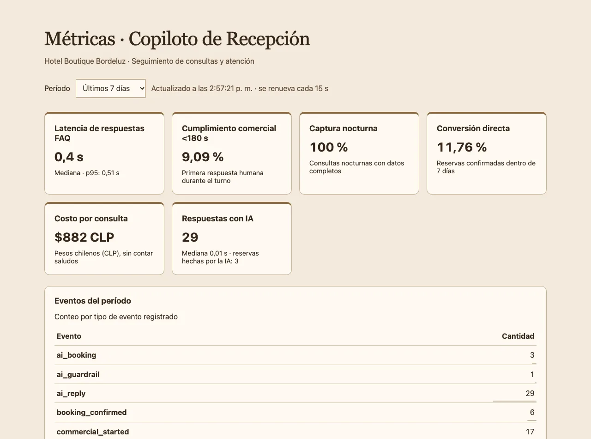
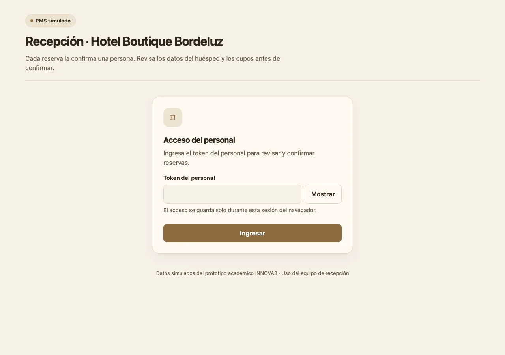

1 · Entrada: qué es y qué hace
- Titular que explica el servicio en una frase: «La recepción que conversa, consulta y reserva».
- Dispositivo de chat a la derecha: muestra el producto antes de pedir un clic.
- Botón «Probar la demo» como acción principal; el secundario explica el recorrido.
- Tres tarjetas de estado en vivo: landing, copiloto y PMS. El visitante comprueba que el sistema existe.
Prueba: ¿entiende en menos de 10 segundos qué hace el servicio?

2 · Conversación del huésped
- Interfaz familiar de mensajería: el huésped no aprende un canal nuevo.
- La ubicación aparece antes que cualquier pregunta de fechas.
- La traza de herramientas muestra qué consultó el copiloto en cada turno.
- Cada respuesta con disponibilidad declara la hora de lectura del PMS.
Prueba: ¿distingue «disponible según lectura» de «reserva confirmada»?

3 · Estado del sistema
- Comprobación en vivo de los tres servicios, sin login.
- Si un servicio cae, la landing lo muestra antes de la demo.
- Refuerza la confianza de quien evalúa: no es una captura estática.
Prueba: ¿le da confianza ver el estado del sistema?

4 · Panel de recepción
- Cronómetro con la meta de tres minutos, en verde, ámbar y rojo.
- Pre-información: fechas, personas, habitación y lectura del PMS.
- Botón «Confirmar en el PMS» con los datos prellenados.
- Notas del turno con autor, para el cambio de turno.
Prueba: ¿entiende qué llegó y qué debe hacer, sin leer todo el chat?

5 · Métricas
- Conversión, cumplimiento bajo 180 s y captura nocturna, definidos en la Unidad 2.
- Costo por consulta en cero: el modelo corre local.
- Contadores sin datos personales; la retención se purga a los 90 días.
Prueba: ¿qué indicador miraría gerencia primero?

6 · PMS simulado
- Veinte habitaciones y doce tipos, con cupos y precios por noche.
- El copiloto lee de aquí; nunca inventa disponibilidad.
- La confirmación ocurre acá, con una persona mirando el inventario.
Prueba: ¿le queda claro dónde se confirma de verdad?